<!DOCTYPE html>
<html lang="en">

<head>
    <meta charset="UTF-8">
    <link rel="stylesheet" href="css/sass/normalize.css">
    <link rel="stylesheet" href="css/sass/main.css">
    <title>Document</title>
</head>

<body>


    <footer>
        <section class="part1">
            
            
            <h2>Qui somme-nous ?</h2>
            <p>L'eurovélo est un projet porté collectivement par 3 Régions et 9 Départements réunis autour d'une
                ambition commune : positionner L'eurovélo comme un itinéraire d'excellence du tourisme à vélo en France
                et à l'étranger.</p>
        </section>
        <ul class="liste_lien">
            <li class="btn1"><a href="">EN SAVOIR PLUS</a></li>
            <li class="btn2"><a href="">NOUS CONTACTER</a></li>
        </ul>

        <ul class="liste1">
            <li>
                <h3><a href="">Présentation de l'itinéraire</a></h3>
            </li>
            <li>
                <h3><a href="">Un itinéraire vélo européen</a></h3>
            </li>
            <li>
                <h3><a href="">Louer un vélo</a></h3>
            </li>
            <li>
                <h3><a href="">Voyage organisé</a></h3>
            </li>
        </ul>

        <ul class="liste2">
            <li>
                <h3><a href="">Les suggestion de parcours</a></h3>
            </li>
            <li><a href="">Séjour</a></li>
            <li><a href="">inspiration</a></li>
            <li><a href="">Étapes</a></li>
        </ul>

        <ul class="liste3">
            <li>
                <h3><a href="">Conseils</a></h3>
            </li>
            <li><a href="">Guides</a></li>
            <li><a href="">Voyager en famille</a></li>
        </ul>

        <section class="part3">
            <h3>La marque Acceuil Vélo qu'est ce que c'est</h3>
            <p>Acceuil Vélo est une marque nationale qui garantie un acceuil et des services de qualité auprès des
                cyclistes le long des itinéraires cyclables</p>
        </section>
        <ul class="liste_lien2">
            <li class="btn3"><a href="">EN SAVOIR PLUS</a></li>
            <li class="btn4"><a href="">DEVENIR ACCEUIL VÉLO</a></li>
        </ul>
    </footer>
</body>

</html>